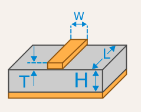
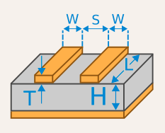
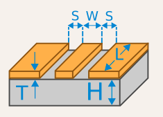
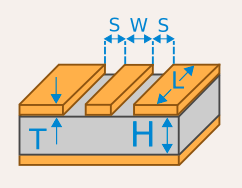

PCB 笔记¶
记录一下在学习画板子过程中学到的心得。
工具¶
- KiCad: 开源软件，跨平台。
- lceda：在线编辑，不需要安装，和 lcsc 有深度集成。
项目 jiegec/HT42B534USB2UART 采用的是 KiCad 5 编写的。目前正在做的另一个项目采用 lceda
流程¶
- 选择所需要使用的芯片，查找芯片的 datasheet。
- 寻找采用了芯片的一些设计，特别是看 schematic。
- 按照 datasheet 里面推荐的电路，或者是其他人的设计，画自己需要的 schematic。
- 设置好各个元件的 footprint，然后转到 PCB 设计。
- 在 PCB 里面布线，生成 Gerber 等文件。
- 把 Gerber 给到生产商（比如 jlc），交付生产。
- 如果是自己焊接，则需要购买元件，比如从 lcsc 购买。
- 收到 PCB 和元件后，自己按照 BOM 和 schematic 焊接各个元件。
笔记¶
- 对于一些连接很多元件的信号，比如 GND，可以留作铺铜解决。也就是说，先不管 GND，把其他所有的信号都接好以后，再在顶层铺铜；如果还是有没有连接上的 GND，可以通过过孔（Via）走到底层，在底层再铺一层铜。
- 对于外部供电的 VCC 和 GND，在 KiCad 中需要用 PWR_FLAG 标记一下。
- 在 KiCad 中设计 PCB 前，要把生产商的工艺参数设置好，不然画了也要重画。
- lceda 在选择元件的时候，可以直接从 lcsc 里选择，这样可以保证封装和商品可以对得上，不需要手动进行匹配。
- 如果要用 jlc 的 SMT 贴片，先在 SMT 元件列表 里搜索所需要的元件；推荐用基本库，如果用其他库，则要加钱；选好元件以后，用元件编号去 lceda 里搜索并添加到 schematic。
- 对于涉及模拟信号的设计，比如音频，需要特别注意模拟信号的电和地都是单独的：
AVCC和AGND。所以要特别注意 datasheet 里面不同的地的表示方法。最后，再用磁珠把VCC和AVCC、GND和AGND分别连接起来就可以了。可以参考 DE2 板子中第 19 页的音频部分设计 和 Staying well grounded。 - 在 schematic 里经常会出现在电源附近的电容，那么，在 PCB 中，也尽量把这些电容放在对应的电源的旁边。
- 耳机插座里面，一般分三种组成部件：Tip，Ring，Sleeve。只有两段的是 TS，三段的是 TRS，四段的是 TRRS。TS 是单声道，T 是声音，S 是地。TRS 是双声道，T 是左声道（或者单声道），R 是右声道，S 是地。TRRS 则是双声道加录音。一般来说，LINE IN 是双声道，MIC IN 是单声道，它们的阻抗也不同；LINE OUT 和 HEADPHONE OUT 都是双声道，但 HEADPHONE OUT 经过了额外的放大器。
- 遇到一个 SPI 协议没有
SPI_MISO引脚的芯片，可能说明它是 write-only 的。 - 手焊的基本元件，一般用 0603 加一些 Padding 的封装；SMT 的话，则建议用 0402 封装。
- I2C 的信号线一般需要加一个几 K 欧姆的上拉电阻到 VCC。
JLC SMT 的基础库不需要换料费，如何寻找基础库中的元件：
- 电阻品牌是 UNI-ROYAL，型号命名规则是：
- 封装：0603/0402
- 功率：WA/WG/W8
- 误差：F(1%)
- 阻值：三位整数 + 一位 exp（J 表示 -1，K 表示 -2，L 表示 -3），例如 2002 表示
200*10^2=20k，1003 表示100*10^3=100k，3300 表示330*10^0=330，330J 表示330*10^-1=33，330K 表示330*10^-2=3.3例子：要找 0402 封装的 10k 欧电阻，搜索 0402WGF1003；要找 0603 封装的 33 欧电阻，搜索 0603WAF330。
- 电容品牌有风华/三星/国巨，三星的电容型号命名规则是：
- 封装：05(0402)/10(0603)
- 字母：A/B/C
- 电容：两位整数 + 一位 exp，单位是 pF，例如 105 表示
10*10^5pF=10^6pF=1uF，104 表示10*10^4pF=10^5pF=0.1uF例子：要找 0402 封装的 100nF 电容，搜索 CL05B104；要找 0603 封装的 1uF 电容，搜索 CL10A105。也可以只搜电容的数字部分，可以找到更多品牌。
阻抗匹配¶
在传输线上，如果出现阻抗变化，就会导致信号出现反射，质量变差。因此，需要保证传输线的两端和传输线整个过程的阻抗一致。
阻抗设置为多少，一般要看协议的规定。确定好协议定义的阻抗以后，需要查看信号两端的芯片内部的阻抗，如果和协议不一致，需要额外添加电阻，并且电阻要尽量放在接近芯片的位置上。由于传输线在 PCB 上，所以和 PCB 厂商的工艺有关，需要去厂商的阻抗计算器上进行计算，例如 jlc 阻抗计算器。涉及到的参数有：
- 板子层数：PCB 层数，最简单的正反面就是 2 层
- 成品厚度：整个 PCB 加起来的厚度，例如 1.6mm
- 内层铜厚：夹在内部的 PCB 的铜的厚度，例如 0.5 oz，就是 1.37/2=0.685 mil
- 外层铜厚：PCB 上下暴露在外面的两层的铜的厚度，常见 1 oz=1.37 mil
- 需求阻抗：协议所要求的阻抗，例如单端 50 欧姆（SDIO），差分 90 欧姆（USB）
- 阻抗模式：传输线的连接方式，见下（图源 KiCad）
- 单端阻抗（Microstrip Line）：一根线传输信号，地线在另一个平面，图中上面的长方形就是传输线，底部就是地平面

- 差分阻抗（Coupled Microstrip Line）：差分线传输信号，地线在另一个平面，图中上方两个长方形就是差分传输线，底部是地平面

- 共面单端：一根线传输信号，周围就是地平面


- 共面差分：差分线传输信号，周围就是地平面
- 单端阻抗（Microstrip Line）：一根线传输信号，地线在另一个平面，图中上面的长方形就是传输线，底部就是地平面
- 阻抗层：传输线所在的层
- 参考层：地线所在的层
由于双层 PCB 的两层铜之间距离比较远（例如 57.68 mil），如果采用单端阻抗，那么需要比较大的线宽，例如用 jlc 阻抗计算器，50 欧姆阻抗需要 106.68 mil 的线宽。如果采用四层 PCB，最上面两层之间距离缩小了很多（例如 7.99 mil），此时即使用单端阻抗，用 jlc 计算得出只需要 13.2 mil 的线宽。所以双层 PCB 更适合使用共面单端的方式，此时传输线和地线放在了同一个平面，距离比较小，就不需要那么大的线宽。
这里的单位：1 mil = 0.0254 mm，1 inch = 1000 mil = 0.0254 m，1 oz = 1.37 mil = 0.0348 mm